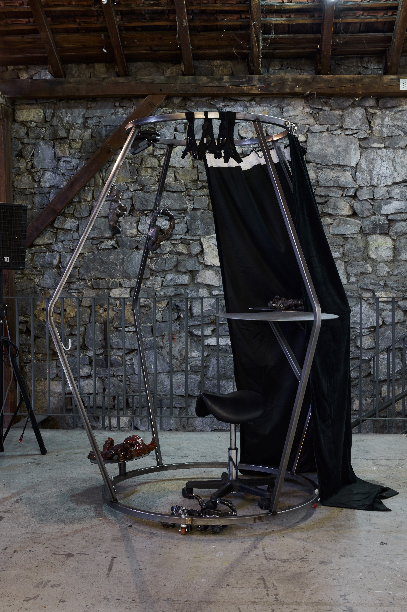
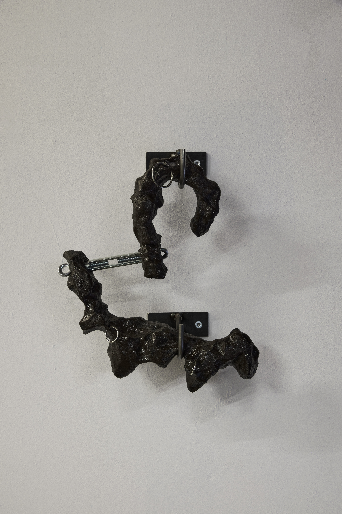
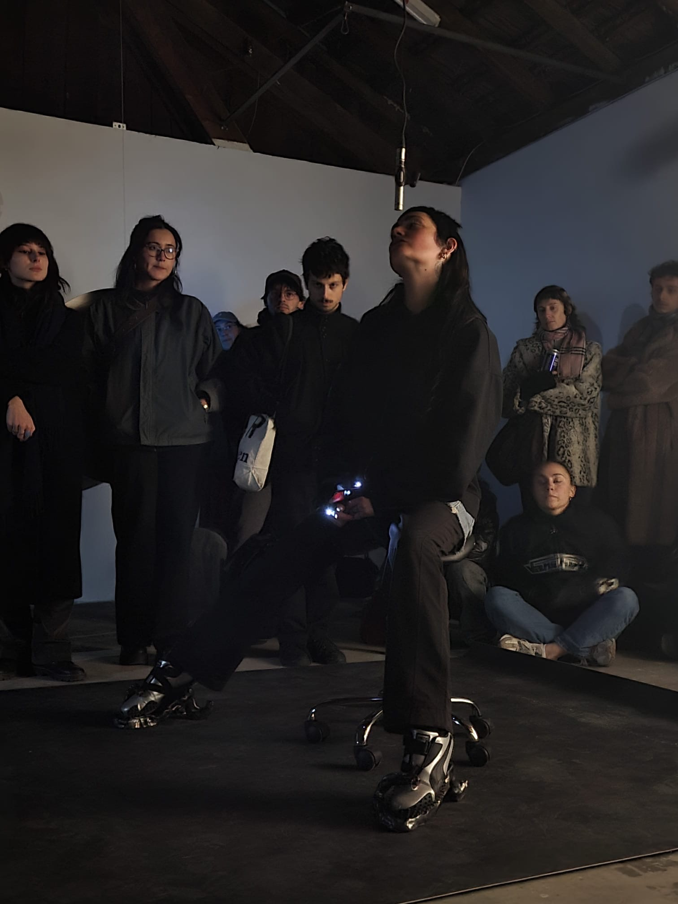
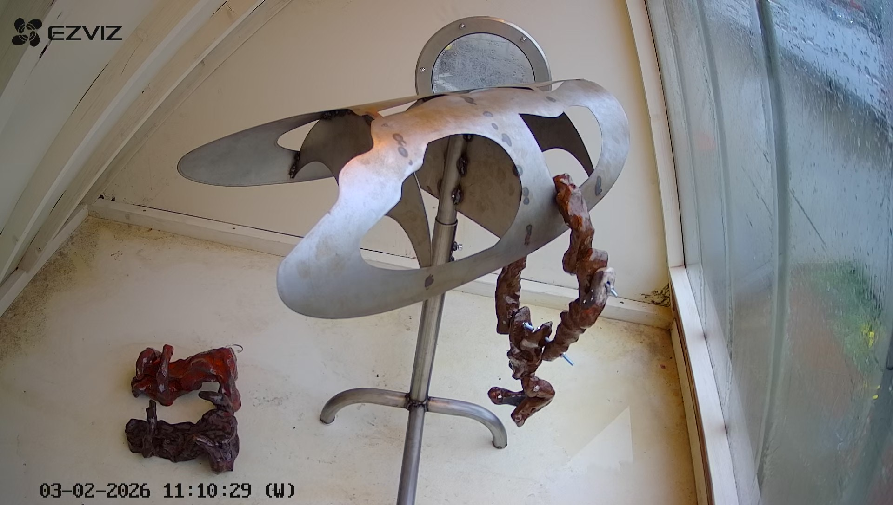

Meet the world’s first female crash test dummy, her name is set 50f, 2026
Meet the world’s first female crash test dummy, her name is set 50f,
is part of a research project exploring the multiple uses and functions of objects in contexts of the militarization of objects and bodies—driven by technological advances and acceleration—and,
by extension, guided by CRASH. The notion of “drive” is central to this project and to my work, understood as that which provokes a gesture, a movement, leading to a behavior.
Symbols coexist with texts such as scores and instruction manuals that blend various types of objects and functions, drawn from industrial, clinical, and military contexts.
In dialogue with the video, the ceramics here serve as a memory of gestures and bear the imprints of proximity to a body.
Flirt-O.S, 2026
Flirt-O.S is a performance presented as part of the group exhibition Cyber Cypher at Duplex, in Geneva.
The performance engages both the performers’ bodies and those of ceramic and manufactured objects, drawing on gestures from various repertoires
— such as bodybuilding and the military — while playing on their distortions :
« vehium » / i love my computer / flirt-objet / html & poétique de la mécanique



CyberCrushInAWetShowcase, 2026
CyberCrushInAWetShowcase, a project presented at Dukat, in Geneva, reveals, via a motorized surveillance camera: a metal seat and ceramics that simultaneously embody alien matter, masturbatory objects, and prosthetic technology.
The camera, used as a tool for monitoring the existing in military/technocratic contexts, is here driven by an affectionate intention, not in the act of capture but in an attempt at extension and connectedness.
[The QR code provides access to the camera footage that recorded the interior environment of the display case during the installation and to images of mechanical interactions between humans and ceramics].

Orgie aliène sur tapis de glaise, 2025
Orgie aliène sur tapis de glaise unfolds as a poetic-technical intervention that seeks to reveal and question the interstitial dynamics between bodies, materials, and languages,
confronting the dominant imaginaries of science fiction and pop culture with more hybrid and unexpected relational forms.
My project is rooted in a critical approach to regimes of attention, disciplined bodies, and mechanisms of cyber-authority, using performance as a lever for experimentation:
the dialogue between a highly mediatized pop soundtrack, live ceramic sounds, repetitive gestures, and voices extracted from blogs reveals how technologies and digital fantasies structure our subjectivities.
By appropriating visual, auditory, and gestural codes from web culture and science fiction, I seek to propose an alternative imaginary space
where corp·x·s-object·x·s-machine·x·s interact, transform, and reconnect with a differently distributed agency.